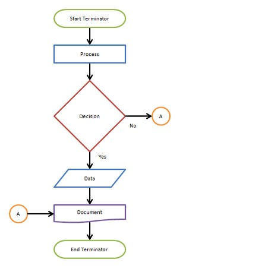

WHAT IS COMPUTER?
A computer is an electronic machine that processes information—in other words, an information processor: it takes in raw information (or data) at one end, stores it until it's ready to work on it, chews and crunches it for a bit, then spits out the results at the other end. All these processes have a name. Taking in information is called input, storing information is better known as memory (or storage), chewing information is also known as processing, and spitting out results is called output.
HOW DOES A COMPUTER WORK?
A computer processes the input to produce the desired output, but how does a machine outperform the human brain? Conventional computers don't try to mimic the human brain. Instead, they run commands sequentially, with data constantly moving from input and memory to the device's processor. Neuromorphic computers, on the other hand, process data at the same time, making them faster, energy-efficient, and closer to the structure of the human brain.
- Input
Input is the data before processing. It comes from the mouse, keyboard, microphone, and other external sensors. - Storage
The storage is how the computer retains input data. The hard drive is used for long-term and mass data storage while the data set for immediate processing is stored temporarily in the Random Access Memory (RAM). - Processing
Processing is where input gets transformed into output. The computer's Central Processing Unit (CPU) is its brain. It's responsible for executing instructions and performing mathematical operations on the input data. - Output
Output is the final result of data processing. It can be anything from images, video, or audio content, even the words you type using a keyboard. You can also receive the output through a printer or a projector instead of directly through your device.
SOFTWARE?
Software is a set of computer programs and associated documentation and data. This is in contrast to hardware, from which the system is built and which actually performs the work.
SYSTEM SOFTWARE
- Operating Systems
Windows, Mac Os, Linux - Utility Programs
Compression, Virus scanners, Back up - Software Development
Assemblers, Compilers, Interpreter
APPLICATION SOFTWARE
Example Application: Microsoft word, PowerPoint, Excel, Photoshop
HOW COMPUTER STORE DATA?
All data stored on storage media – whether that’s hard disk drives (HDDs), solid state drives (SSDs), external hard drives, USB flash drives, SD cards etc – can be converted to a string of bits, otherwise known as binary digits. These binary digits have a value of 1 or 0, and the strings can make up photos, documents, audio and video. A byte is the most common unit of storage and is equal to 8 bits.
All data in a computer is stored as a number. For example, letters become numbers; the Complete Works of Shakespeare is around 1250 pages in print, contains 40 million bits, with one byte per letter, totalling five megabytes (5MB). Photographs are converted to a set of numbers that indicate the location, colour and brightness of each pixel. Whereas convention numbers use ten digits (0, 1, 2, 3, 4, 5, 6, 7, 8, 9), binary numbers use two digits to represent all possible values. The conventions numbers 0-8 translate into binary numbers as: 0, 1, 10, 11, 100, 101, 110, 111 and 1000. With binary numbers, any value can be stored as a series of items which are either true (1) or false (0).
Binary data is primarily stored on the hard disk drive (HDD). The device is made up of a spinning disk (or disks) with magnetic coatings and heads that can both read and write information in the form of magnetic patterns. In addition to hard disk drives, floppy disks and tapes also store data magnetically. Newer laptops, as well as mobile phones, tablets, USB flash drives and SD cards, use solid state (or flash) storage. With this storage medium, the binary numbers are instead stored as a series of electrical charges within the NAND flash chips. Because all data is made up of a string of binary numbers, just one number out of place can cause a file to become corrupt.

HOW PROGRAM WORK?
The CPU runs instructions using a "fetch-execute" cycle: the CPU gets the first instruction in the sequence, executes it (adding two numbers or whatever), then fetches the next instruction and executes it, and so on. Some of the instructions affect the order that the CPU takes through the instruction sequence. For example, an instruction might direct the CPU to jump back to an earlier point in the instruction sequence (loops are implemented this way), or to skip over the next instruction if a particular condition is true (if-statements are implemented this way).
What is Fetch - Decode - Execute - Cycle

Assembly language
In computer programming, assembly language, often referred to simply as Assembly and commonly abbreviated as ASM or asm, is any low-level programming language with a very strong correspondence between the instructions in the language and the architecture's machine code instructions. Assembly language usually has one statement per machine instruction (1:1), but constants, comments, assembler directives, symbolic labels of, e.g., memory locations, registers, and macros are generally also supported.

High level language
In computer science, a high-level programming language is a programming language with strong abstraction from the details of the computer. In contrast to low-level programming languages, it may use natural language elements, be easier to use, or may automate (or even hide entirely) significant areas of computing systems (e.g. memory management), making the process of developing a program simpler and more understandable than when using a lower-level language. The amount of abstraction provided defines how "high-level" a programming language is.
Programing language
Compiler
A compiler is a program that translates a source language or high-level programming language (for example, Java, C++) into a target machine code (binary bits – 1 and 0) that the CPU can process and understand. The program to be translated is written inside an editor and are known as source statements. The act of translating source code to machine or binary code is known as compilation.
Interpreter
An interpreter is a program which also converts a high-level programming language (like Python, PHP, Perl) into machine code. Although similar to a compiler, the way that code is executed is different for both. Unlike a compiler that simply converts the source code to machine code, an interpreter can be run directly as an executable program. Contrary to a compiler, it converts source code to machine code when the program is running and not before the program runs.
PROGRAM DISIGN
Program development cycle
is Programming Development Cycle is a model which is used to represent the stages and tasks that are included orderly in each step to write and put software.
From the initial process of planning, the particular software can be used as a product in long-term usage by implementation and continuation and used as a completed software application. The Programming Development Cycle contains step by steps like analysis which is a requirement.
It also designs the solution and after that validates and implements the design. Then test and document the solution. In the below section, you will understand what are the stages or cycles of Programming Development.
Designing a Program
- Understanding the Program
- Using Design Tools to Create a Model
- Develop Test Data
Pseudocode
In computer science, pseudocode is a plain language description of the steps in an algorithm or another system. Pseudocode often uses structural conventions of a normal programming language, but is intended for human reading rather than machine reading. It typically omits details that are essential for machine understanding of the algorithm, such as variable declarations and language-specific code. The programming language is augmented with natural language description details, where convenient, or with compact mathematical notation. The purpose of using pseudocode is that it is easier for people to understand than conventional programming language code, and that it is an efficient and environment-independent description of the key principles of an algorithm. It is commonly used in textbooks and scientific publications to document algorithms and in planning of software and other algorithms.
FLOWCHART
A flowchart is a type of diagram that represents a workflow or process. A flowchart can also be defined as a diagrammatic representation of an algorithm, a step-by-step approach to solving a task. The flowchart shows the steps as boxes of various kinds, and their order by connecting the boxes with arrows. This diagrammatic representation illustrates a solution model to a given problem. Flowcharts are used in analyzing, designing, documenting or managing a process or program in various fields.
How FlowChart important?
Flow charts are an important tool for the improvement of processes. By providing a graphical representation, they help project teams to identify the different elements of a process and understand the interrelationships among the various steps.
FlowChart Symbol

IPO OR INPUT PROCESS OUTPUT
Computer programs typically perform the following three-step process:
- Input is received.
- Some process is performed on the input.
- Outputis produced.
VARIABLES
Variable are: Storage location that have a name, Name-value pairs